Porta di Mare · Ristorante · Terrazza · Crew
Ristorante · Terrazza · Crew
Cocina italiana con producto traído de Italia, pizza al horno de leña y terraza en la calle Enric Granados.
Esta semana
La carta
Tradizionali
Calzone
Suplementos de pizza
Pizza vegetal, con verduras
Antipasti, pasta y postres: en la carta del local. Precios con IVA.
Los productos pueden contener huevo, gluten, pescado, frutos de cáscara o lácteos. Consúltanos antes de pedir.
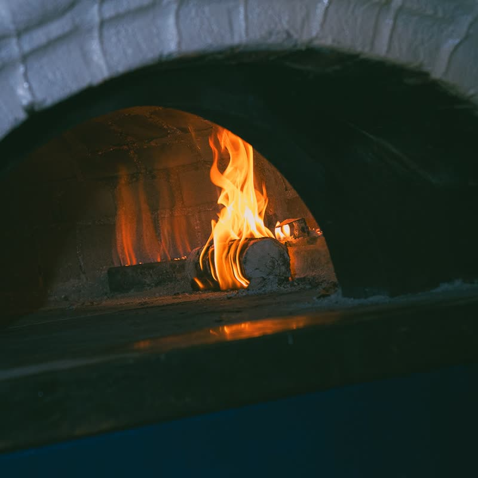
Dal forno
Las pizzas salen del horno de leña de la sala. Los platos, en mayólica azul.
Platos fotografiados por los clientes.
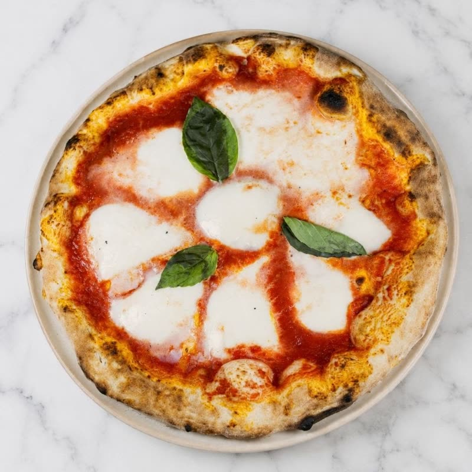
Margherita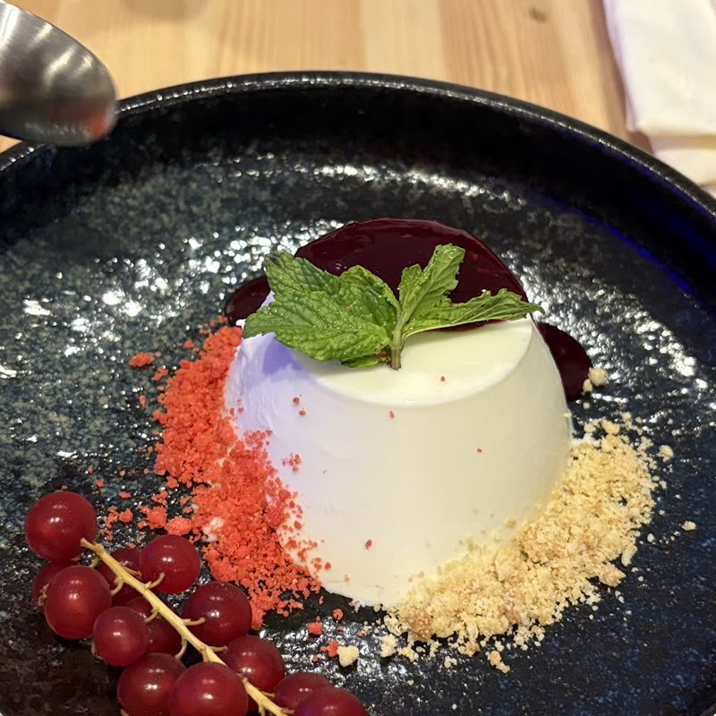
Panna cotta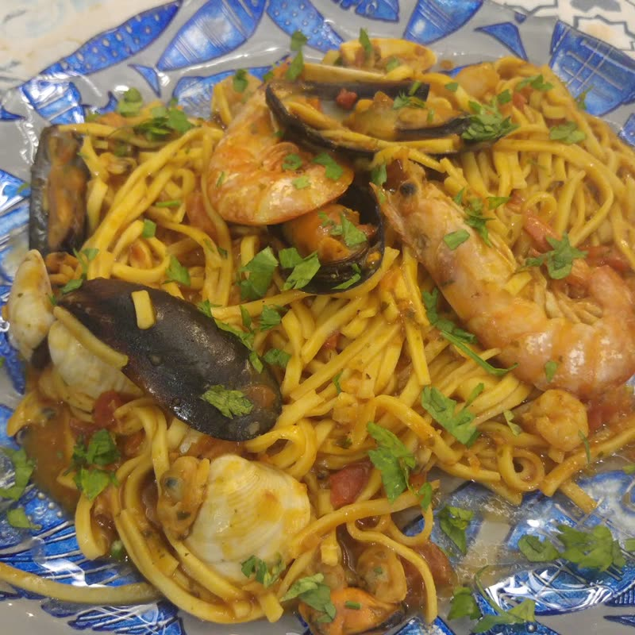
Spaghetti ai frutti di mare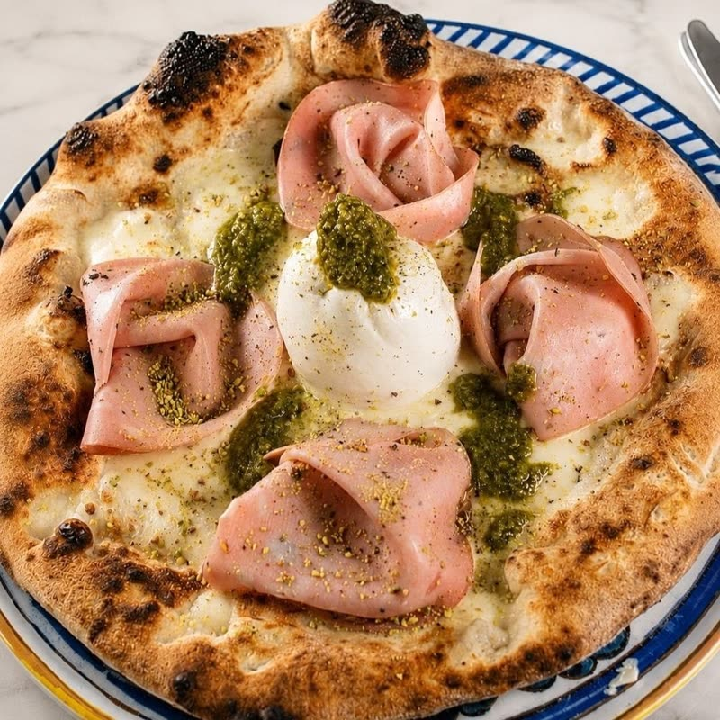
Pizza con mortadela y pistacho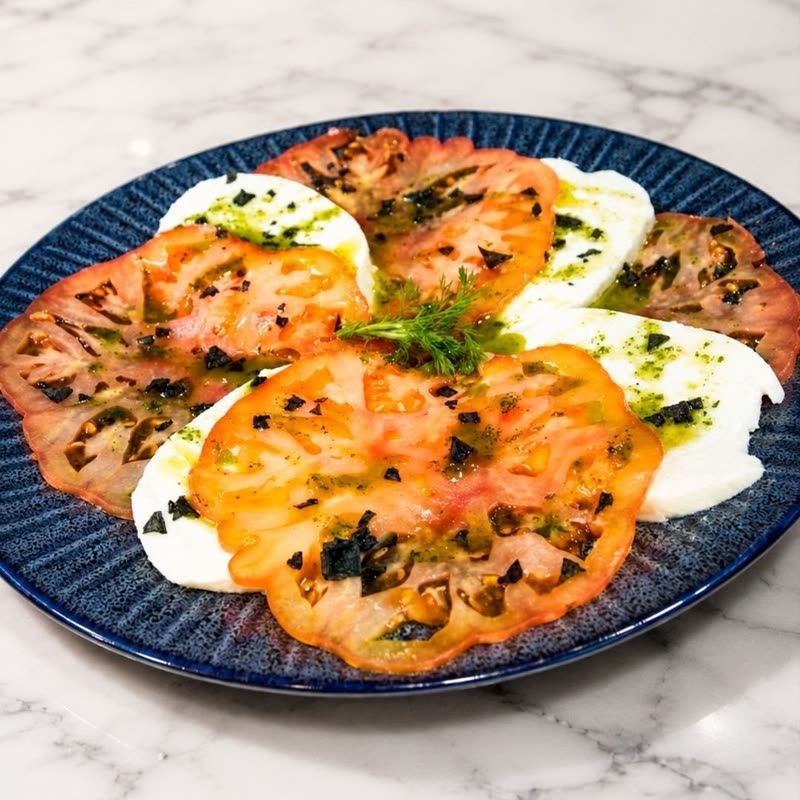
Carpaccio de tomate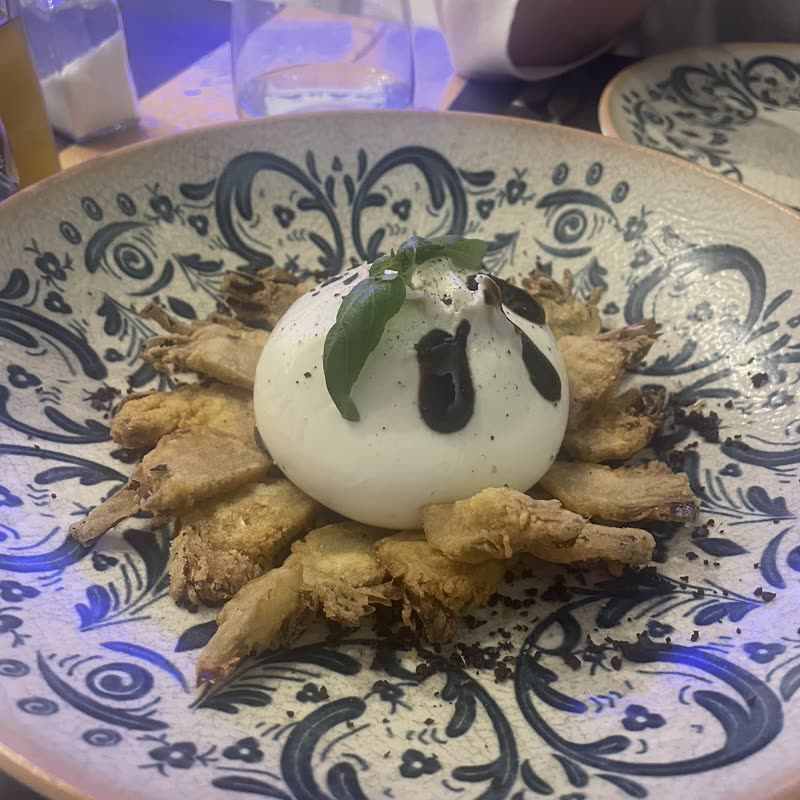
Burrata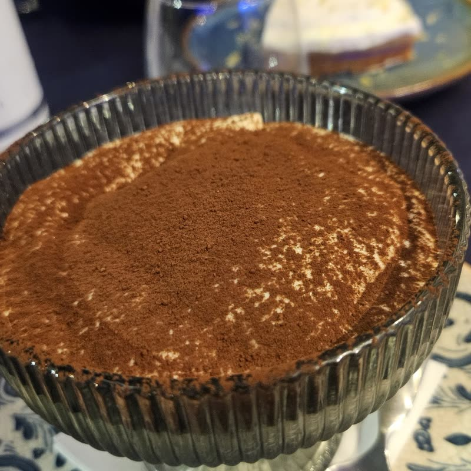
Tiramisù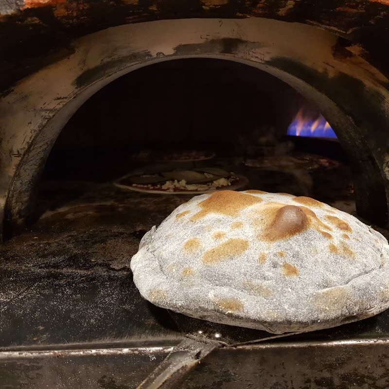
Forno a legna
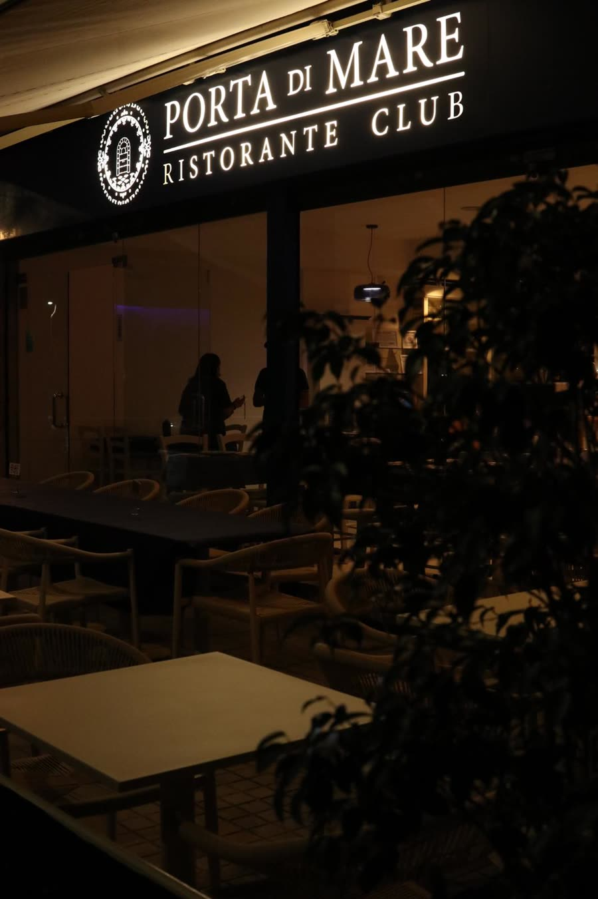
Terrazza
Mesas fuera y dentro, hasta las once de la noche de miércoles a domingo.
Grupos y celebraciones
Para cenas de grupo, cumpleaños o empresa, escríbenos y preparamos la mesa.
4,4 de 5 en Google · 702 opiniones
- Producto italiano: vitello tonnato, pizzas grandes, tiramisù.
- Servicio atento y ambiente tranquilo.
- Muchas opiniones en inglés: vienen también de fuera.
Lo que más se repite en sus opiniones de Google
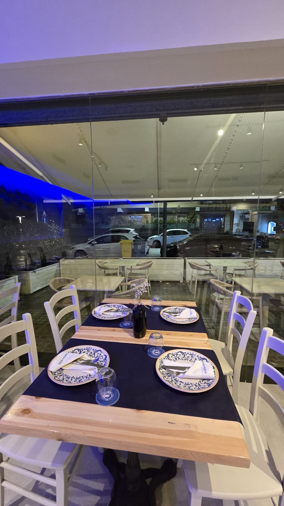
Horario
- Lunes
- Cerrado
- Martes
- Cerrado
- Miércoles
- 12:00–16:00 · 20:00–23:00
- Jueves
- 12:00–16:00 · 20:00–23:00
- Viernes
- 12:00–16:00 · 20:00–23:00
- Sábado
- 12:00–16:00 · 20:00–23:00
- Domingo
- 12:00–16:00 · 20:00–23:00
Dónde estamos
Carrer d'Enric Granados, 97
08330 Premià de Mar